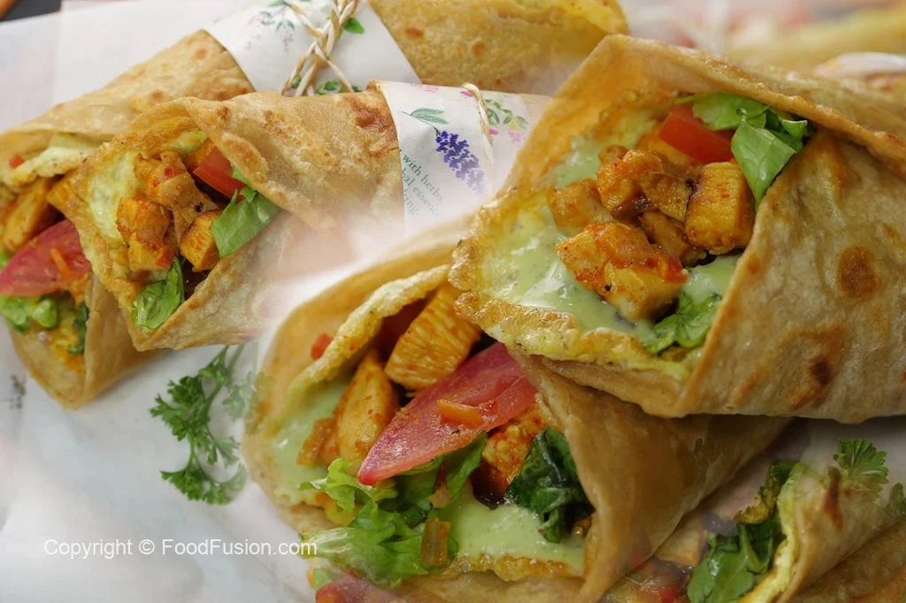
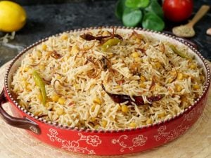
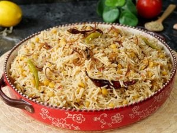
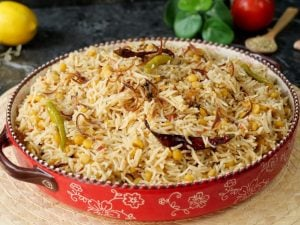
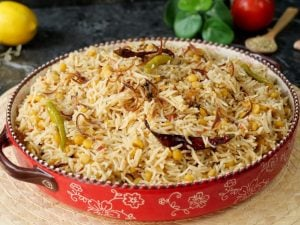
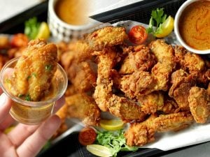
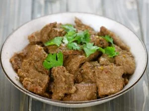
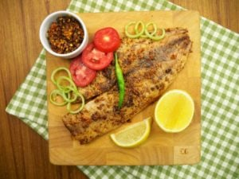
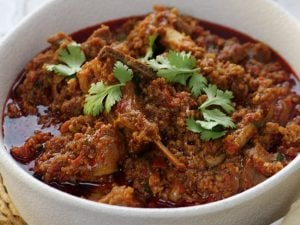

Our Recipes
Most Recent / Most Viewed / Most Favourite / All

 



Our homemade remedy desserts are always available just for you. We take pride in creating delicious and healthy treats using natural ingredients that not only satisfy your sweet cravings but also nourish your body. From energy-boosting energy balls made with oats and nuts to refreshing fruit salads drizzled with honey, each dessert is crafted with care and attention to detail. We believe that indulging in sweets should be a guilt-free pleasure, which is why our recipes focus on wholesome ingredients without compromising on taste. Treat yourself to our homemade desserts, and experience the joy of deliciousness made with love.
| speggeti |
 Famous Pakora |
||
| Sweet Chocolate Cake |
 Mutton |
 Fried Fish |
 Mutton karahi |
Food Fusion is all about redefining ‘Cooking’ for you! It’s the solution to that never ending problem of preparing high quality delicious food and curtailing the eating out habits of your loved ones! With modernized and yet simple cooking methods, you are surely in for a flavorsome treat with our recipes that will surely make you the next talk of the town! Being Pakistan’s first digital food video portal, we understand your difficulty of being unable to execute that perfect dish just by going through those long recipes & ending up with something not as good as the one you see on paper. Hence, we make sure to get this covered by bringing in videos that will help you prepare the same delicious food as you see in our videos.
|
biryani |
breakfast |
desserts |
ramzan-items |
snacks |